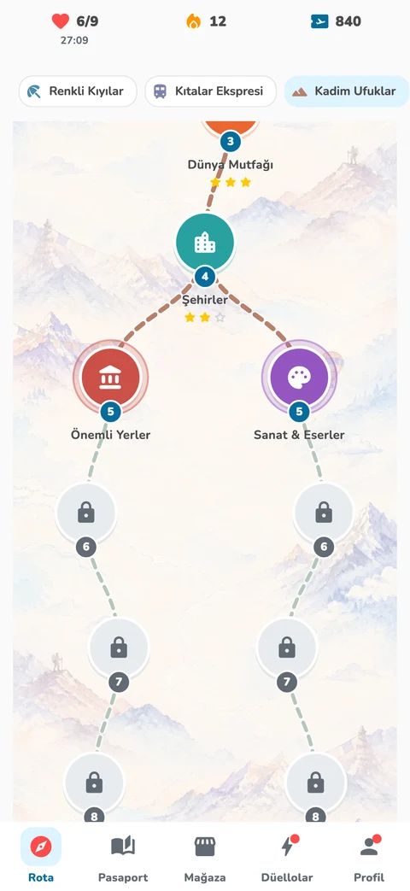
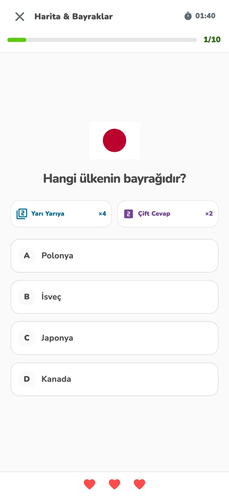
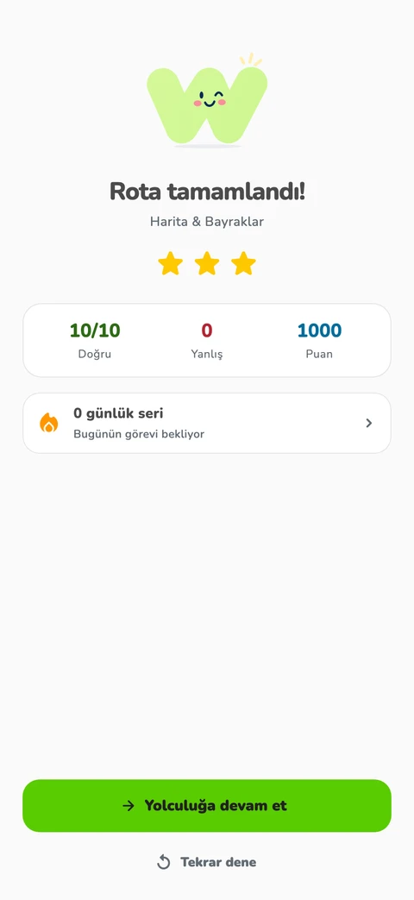
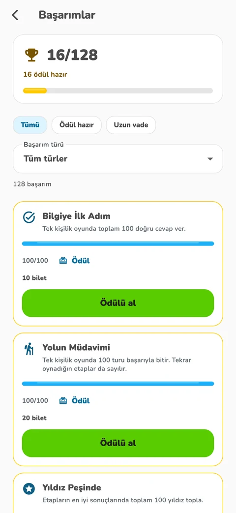

Etapta dünyayı dolaş
8 dünyada rotanı aç. Haritalar ve bayraklardan sanata, tarihe, şehirler ve mutfağa uzanan 9 kategoride kendini sına.
SoftwareLuna / Worldia
Bir bayrağı tanı, haritada bir ülke bul, bir arkadaşına meydan oku. Worldia’da her etap, 10 soruluk yeni bir keşif.
Türkçe sorular · Çevrimdışı tek kişilik oyun · Arkadaşlarla düello

Küçük turlar, büyük keşifler
8 dünyada rotanı aç. Haritalar ve bayraklardan sanata, tarihe, şehirler ve mutfağa uzanan 9 kategoride kendini sına.
Arkadaşınla aynı soruları kendi zamanınızda yanıtlayın. İki tur da bitince sonucu, karşılıklı maç sayınızı ve galibiyet oranını görün.
Her gün en az bir etabı başarıyla tamamlayarak serini uzat. Toplam düello, galibiyet ve üst üste kazanma hedeflerine ilerle.
Oyunun içinden




Oyun ekranları örnek ilerleme ve maç verileriyle gösterilmiştir.
Pasaportun sana özel
Tamamladığın dünyaları pasaportuna işle. Yıldızlarını, kazandığın ödülleri ve yolculuğun boyunca biriken damgalarını sayfa sayfa gör.
Günlük seri
Günlük seriyi ilerletmek için yalnızca uygulamayı açmak yetmez: en az bir etabı başarıyla tamamla. Günlük seri ve uzun vadeli başarımlarla keşfetme alışkanlığını büyüt.
Yeni yol arkadaşın
Etap sonunda ya da düellonun galibi belli olduğunda kısa bir tepki: kazanınca zıplama ve küçük konfeti, kaybedince yüzünü kapatıp ağlama. Bir sonraki deneme için her zaman yanında.
Maskot ve erişilebilirlik hakkında →Oyuncu rehberi
Hesap erişimi, düellolar, başarımlar ve ödüllü reklamlar hakkında yardım al.
Desteği aç 02 / VERİLERGizlilik politikasıNelerin cihazında kaldığını, nelerin çevrimiçi işlendiğini öğren.
Politikayı oku 03 / HESAPHesap ve veri silmeOyundan veya e-postayla çevrimiçi hesabının silinmesini iste.
Silme seçenekleriTek kişilik oyun için hesap gerekmez. Arkadaşlar ve düellolar internet bağlantısı gerektirir. E-posta bağlamak ve ödüllü reklam izlemek isteğe bağlıdır.